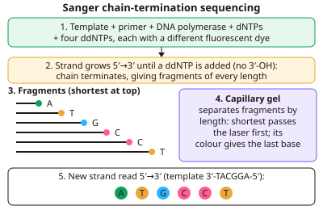

A-level Biology Year 13 · Topic 18
Genetic technologies
Genetic technologies covers the tools that let scientists read, copy, cut and change DNA.
We will look at DNA sequencing and bioinformatics, recombinant DNA technology, PCR, gel electrophoresis and DNA profiling.
Then we look at DNA probes, genetic screening, personalised medicine and gene therapy, and finish by weighing up the ethical, social and economic issues.
- 7 subtopics
- 244 questions
- Free: 18.1 notes and 10 questions
In this topic
- 18.1DNA sequencing methods and bioinformaticsFree below · 38 questions
- 18.2Recombinant DNA technology: restriction enzymes, vectors and transformation of organismsOpen in Full Marks · 65 questions
- 18.3The polymerase chain reaction (PCR)Open in Full Marks · 27 questions
- 18.4Gel electrophoresis and DNA profiling (genetic fingerprinting)Open in Full Marks · 24 questions
- 18.5DNA probes, genetic screening and personalised medicineOpen in Full Marks · 35 questions
- 18.6Gene therapyOpen in Full Marks · 25 questions
- 18.7Ethical, social and economic issues of genetic technologies and GM organismsOpen in Full Marks · 30 questions
18.1 · Free notes
DNA sequencing methods and bioinformatics

Key points
- DNA sequencing determines the order of bases in a DNA molecule. Methods are now automated, and many whole genomes have been sequenced (the human genome is about 3 × 10⁹ base pairs).
- Sanger (chain-termination) sequencing uses a template strand, a primer, DNA polymerase, the four normal dNTPs and small amounts of four dideoxynucleotides (ddNTPs). Each ddNTP carries a different fluorescent dye.
- A ddNTP has no 3′-OH group, so DNA polymerase cannot form a phosphodiester bond to the next nucleotide. Chain termination therefore happens at random positions, giving fragments of every possible length.
- Fragments are separated by capillary gel electrophoresis according to length, with the shortest moving fastest. A laser detects the dye colour of the terminal ddNTP, and a computer reads the sequence of the new strand, which is complementary to the template.
- Next-generation (high-throughput) sequencing fragments the DNA and sequences millions of fragments at the same time (massively parallel), for example sequencing by synthesis using fluorescent reversible terminator nucleotides. It is much faster and cheaper than Sanger sequencing.
- Next-generation sequencing gives millions of short reads. Computers assemble them by finding overlapping sequences or by aligning them to a reference genome. Coverage (how many times each base is read) improves accuracy.
- Bioinformatics is the use of computer software and databases to store, analyse and compare biological data such as DNA and protein sequences. Computational biology uses these data to build models and make predictions.
- Genome comparisons between species show relatedness: fewer base differences mean a more recent common ancestor (phylogenetics; the human and chimpanzee genomes are about 98–99% similar). Comparisons between individuals identify SNPs and disease-associated alleles.
- A gene sequence lets you predict the amino acid sequence (primary structure) using the genetic code, once introns are identified. It cannot predict the final tertiary structure or function with certainty. Genes can be located by start and stop codons.
- Applications: personalised medicine (drug choice based on genotype), screening for disease alleles, tracking pathogen outbreaks and antibiotic-resistance genes, and synthetic biology. Exam tip: write 'ddNTP lacks the 3′-OH so the chain terminates', and remember the sequence read is the complementary strand.
In more detail
- Reading a Sanger gel: fragments are ordered by length; reading from the shortest to the longest fragment gives the sequence of the new strand, 5′ to 3′, with each fluorescent colour showing the final base.
- Bioinformatics tools: sequence databases and alignment software compare sequences to find genes, predict protein structure and work out evolutionary relationships.
- Pharmacogenomics: variations in genes for liver enzymes affect how fast people break down drugs, so doses can be adjusted to each patient.
- Speed and cost: the first human genome took 13 years; now a genome can be sequenced in about a day for a few hundred pounds.
Practice
DNA sequencing methods and bioinformatics: 10 questions
Pick an answer to check it, or open the answer for the explanation.
1. In Sanger sequencing, why does DNA synthesis stop when a dideoxynucleotide (ddNTP) is added to the growing strand?
- It cannot form hydrogen bonds with the template base
- It is too large to fit into the active site of the polymerase
- It has no 3′-OH group, so no phosphodiester bond can form
- It has no phosphate group to bond with the next base
Show answer
C: It has no 3′-OH group, so no phosphodiester bond can form. A ddNTP lacks the 3′-OH on its sugar, so DNA polymerase cannot form a phosphodiester bond to the next nucleotide and the chain terminates.
2. In automated Sanger sequencing, how are the labelled DNA fragments separated?
- By centrifugation according to base composition
- By chromatography according to dye colour
- By PCR according to primer sequence
- By capillary gel electrophoresis according to fragment length
Show answer
D: By capillary gel electrophoresis according to fragment length. Fragments are separated by capillary gel electrophoresis, with shorter fragments moving faster. The laser then reads the dye on the final base.
3. In capillary electrophoresis of Sanger fragments, which fragment reaches the laser detector first?
- The longest fragment, as it carries the most charge
- The fragment ending in a guanine ddNTP
- The shortest fragment, ending at the first base after the primer
- The template strand, which is unlabelled
Show answer
C: The shortest fragment, ending at the first base after the primer. Shorter fragments move through the gel matrix faster, so the shortest fragment (terminated at the first base after the primer) is detected first.
4. A template strand reads 3′-TACGGA-5′. What is the sequence of the complementary strand made during sequencing?
- 5′-TACGGA-3′
- 5′-ATGCCT-3′
- 3′-ATGCCT-5′
- 5′-AUGCCU-3′
Show answer
B: 5′-ATGCCT-3′. Pairing is A–T and C–G, and the strands are antiparallel, so the new strand reads 5′-ATGCCT-3′. DNA contains thymine, not uracil.
5. How does next-generation sequencing differ from Sanger sequencing?
- It uses RNA instead of DNA as the template
- It does not need DNA polymerase
- It sequences millions of fragments simultaneously (in parallel)
- It sequences one fragment at a time in each capillary
Show answer
C: It sequences millions of fragments simultaneously (in parallel). Next-generation sequencing is massively parallel, reading millions of short fragments at once, which makes it faster and cheaper per base.
6. Which statement best defines bioinformatics?
- Producing proteins from cloned genes
- Amplifying DNA in a thermocycler
- Using restriction enzymes to cut genomes into fragments
- Using computers and databases to store, analyse and compare biological data
Show answer
D: Using computers and databases to store, analyse and compare biological data. Bioinformatics applies computer software and databases to handle and interpret biological data such as DNA and protein sequences.
7. Species X differs from species Y by 1.2% of bases and from species Z by 6.5%. What can be concluded?
- X and Z are more closely related
- Y and Z must belong to the same genus
- X shares a more recent common ancestor with Y than with Z
- Z evolved directly from X
Show answer
C: X shares a more recent common ancestor with Y than with Z. Fewer base differences suggest less time since divergence, so X and Y share a more recent common ancestor than X and Z.
8. Whole-genome sequencing of bacteria shows isolates A and B differ by 2 SNPs, but A and C differ by 150 SNPs. Which conclusion is best supported?
- A and B probably share a recent common source
- SNP differences are unrelated to relatedness
- B and C are identical
- A and C are the same strain
Show answer
A: A and B probably share a recent common source. Very few differences between A and B suggest recent common ancestry, so a common source. Many differences between A and C suggest a more distant relationship.
9. Which is a limitation of short-read next-generation sequencing?
- It can only sequence RNA
- It needs a primer for each ddNTP
- Short reads must be assembled by computer, so repeated regions are hard to resolve
- It cannot detect single-base changes
Show answer
C: Short reads must be assembled by computer, so repeated regions are hard to resolve. Reads are short and must be aligned or assembled. Repetitive sequences give ambiguous overlaps, which makes assembly difficult.
10. Why is each ddNTP in a Sanger reaction labelled with a different coloured dye?
- To give each fragment a different charge for separation
- To prevent fragments binding to the template
- To identify the terminal base of each fragment, so all four ddNTPs can share one tube
- To increase the rate of DNA polymerase
Show answer
C: To identify the terminal base of each fragment, so all four ddNTPs can share one tube. Each colour identifies the base at which a fragment ended, so the laser can read the sequence from a single run of all four ddNTPs.
Keep going in Full Marks
Full Marks has 38 questions on DNA sequencing methods and bioinformatics (28 more than here), set out in practice levels. You also get notes and 3D models for all 7 subtopics of Genetic technologies, plus games, timed exams and past papers.